Introduction
The objective of this report is to analyse and forecast the personal consumption expenditure (PCE) data for the US. The task required an evaluation of three different time-series forecasting models: a simple forecasting model, an exponential model, and ARIMA model. After analysing the time-series and detecting the best model, the report will forecast the expected value of PCE for the coming months. Also, one-step ahead rolling forecast value will be contrasted, without re-estimating the parameters.
The ‘PCE.csv’ file consists of 779 rows with monthly recorded personal consumption expenditure data of US citizens with observations from January 1959 to November 2023. It consists of two columns: ‘DATE’ and ‘PCE’. Since the provided data was seasonally adjusted, there was just trend cycle and remainder components.
Data Preparation
Interpolation:
Observing the data, it was found that about 43 values were missing for PCE, which is about 5.5 percentage of the dataset.
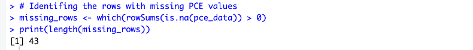
Figure 1: Missing values.
Imputation was required to deal with it, as we cannot continue the analysis with missing values in the dataset. The package ‘imputeS’ and its function ‘na_interpolation()’ were used for it. This function was used because it interpolates the missing values in a linear fashion and preserves the temporal structure of the data.
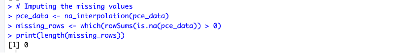
Figure 2: Imputed data.
The dataset was ready for further analysis, building models, and forecasting once the missing values were imputed.
Data Split:
Based on the Pareto principle, the dataset was then split in an 80:20 ratio and the last 20 percent values were set aside as the test set. The initial 80 percent of the dataset was used to train the different models and to evaluate their performances.
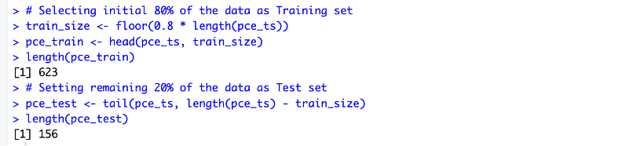
Figure 3: Training and test sets.
Since the data was collected monthly, frequency of 12 was used to plot the time-series. The plot of PCE values with time showed an upward trend, indicating an increase in the consumption expenditure. A sharp dip was observed in the PCE value around the early to mid 2020. However, except the dip, the overall trend appears to be continual.
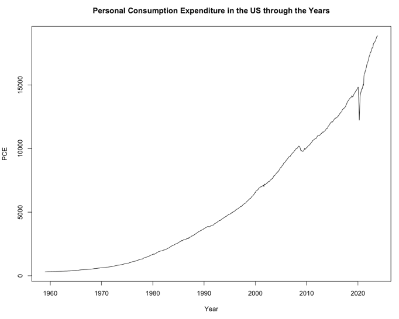
Figure 4: PCE time-series.
The seasonally adjusted dataset was then decomposed with a multiplicative model to observe the irregularities and varying trends, to enhance the forecasting accuracy. An evident upward trend was observed in the decomposed time-series, along with a random effect around the year 2020.
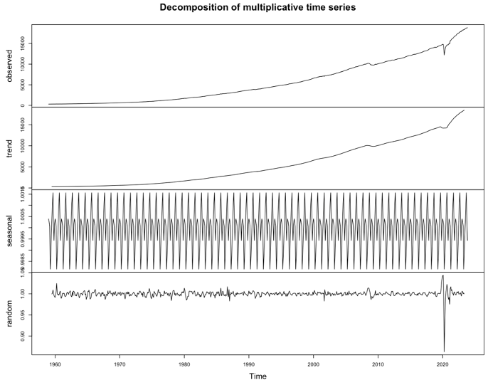
Figure 5: Decomposed time-series.
Simple forecasting using Drift Model
The drift model was chosen as the simple forecasting model over the average, naïve and seasonal naïve models as it captures the dynamic upward or downward trends, and seasonal fluctuations effectively. Also, since the provided dataset was already seasonally adjusted, it was needless to consider seasonal patterns explicitly by using the seasonal naïve model. Furthermore, the average and naïve models do not accommodate residual seasonality and were likely to produce a biased forecast ignoring the existing trend in the data, contrary to the drift model. The drift model substantially addresses both short-term seasonality and long-term trends, and thus is more suitable for the PCE dataset having non-linear growth rate.
The naïve method replaces the missing values with the last observed values, hence missing the trend. While the drift method considers both trend and residual seasonality for the same, ensuring precise predictions and forecasts. Another advantage of using the drift model over the other models was its resilience to outliers using robust regression techniques.
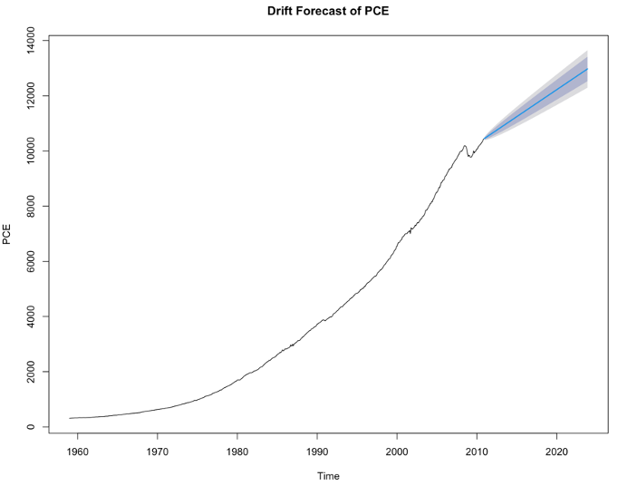
Figure 6: PCE forecast by Drift model.
The drift model performed exceptionally well on the training set having high accuracy metrics like low RMSE, MAE, and MAPE, and minimal errors. Although, the efficiency of the model decreased significantly on the test set, demonstrating a notable increase in errors and decline in the accuracy metrics. This discrepancy in the forecast accuracy of the training and test models indicates potential overfitting during the training of the model. Therefore, the drift model requires an enhanced generalisation method to mitigate the discrepancy between the performance of the training and test sets.
Exponential Smoothing through Holt’s Linear Trend Model
The Exponential models are preferred when the time-series shows trend, or seasonal patterns, or both, preferably when the exhibited patterns change over time and are not stable. Out of the three types of exponential models, the triple exponential smoothing model or Holt-Winters is regarded the best as it can handle both trend and seasonal components simultaneously. The single or simple exponential smoothing is selected when the data only has a pattern, with no trend or seasonality. Meanwhile, the second-order exponential smoothing or the Holt’s trend model is considered suitable for time-series having a trend but no seasonality.
In this scenario, Holt’s trend model was preferred as the data is seasonally adjusted but has a trend. Also, since the trend of PCE in the dataset was not constant, but rather exponential, ‘multiplicative’ seasonal component was applied, instead of the default ‘additive’ component.
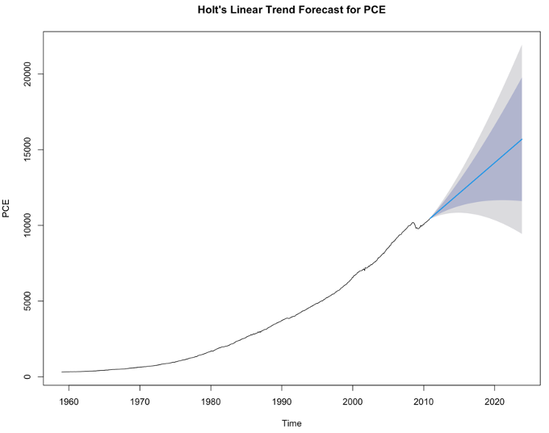
Figure 7: Holt’s exponential smoothing on PCE dataset.
The Holt’s trend model preformed significantly well for both the training and test sets, exhibiting admirable accuracy metrics with comparatively low errors. Although, the accuracy exhibited by the model for the test set was slightly lower than that for the training set, but the difference was minute. The minor variations in the forecasting accuracy, and a consistent overall performance, suggests that the model was able to generalise the data effectively.
ARIMA model
The ARIMA model is preferred when the time-series data is stationary or can be made stationary by differencing. Differencing is the process by which time-series showcasing trends are made stationary by taking differences between consecutive values. When the data is stationary, ARIMA captures the trends, seasonality, and even autocorrelation structures credibly. This model excels in capturing linear structures and forecasting short-term values.
Uncertainty of a trend increases with time, hence the long-term predictions made using the ARIMA model are not quite effective. Moreover, ARIMA models need robust pre-processing of data and handling of outliers, as they are sensitive to missing values, outliers, and noise in the data, which can distort the parameter estimates, leading to inaccurate forecasts.
In a trended time-series, the observations closer in time also tend to be closer in value. Thus, autocorrelation values for short intervals are majorly high and positive and decreases as the time interval between observations is increased. For time-series analysis, ARIMA uses Autocorrection Function (ACF) and Partial Autocorrection Function (PACF) to identify the moving average order (Romer, et al., 2006). While ACF measures the correlation between time-series and its lagged values, PACF measures the same but after removing its immediate lags.
Comparison of the autocorrelation plot of the training and test sets depict a decline in the correlation with time, suggesting that the dependency of PCE values on immediate values has decreased.
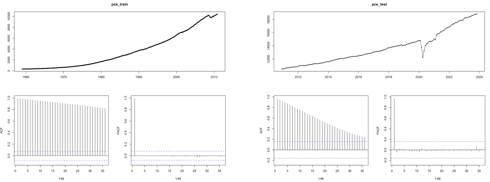
Figure 8: Autocorrelation of the training and test sets.
Applying the ‘auto.arima()’ function, ARIMA with order 3,2,2 was found best suited to the training set. The model depicted creditable performance on both training and test sets, displaying high accuracy metrics and low errors. Like the Holt’s exponential model, ARIMA observed a marginal decrease in accuracy over the test model, as compared to the training model. The overall consistency of the model describes its robustness for forecasting future values.
Choosing the Best model
To select the best model for forecasting PCE, accuracy of the models was compared. Mean error (ME), root mean squared error (RMSE), mean absolute error (MAE), mean percentage error (MPE), mean absolute percentage error (MAPE), mean absolute scaled error (MASE), and autocorrelation of errors at lag 1 (ACF1) values of the models were contrasted for this, and preference was given to the one with lowest error values.
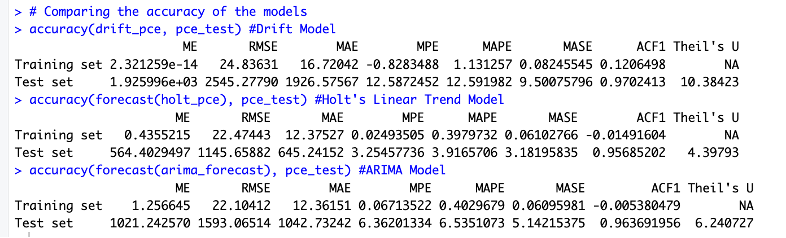
Figure 9: Accuracy comparison of the models.
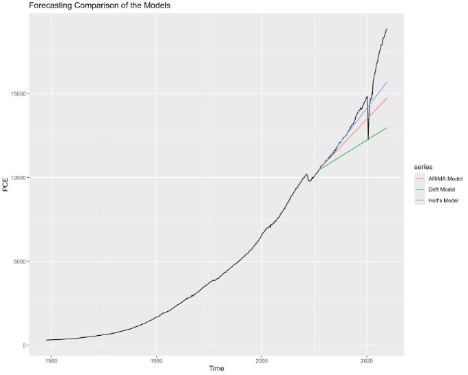
Figure 10: Comparing plot of the models against real values.
Conclusion
Based on the comparisons from Figure 9 and Figure 10, the drift model displays significant accuracy over the training set but struggles over the test set. Although the dataset observes a non-linear upward trend, and ARIMA model performs commendably on both the data sets, the Holt’s exponential smoothing trend model displays a comparatively superior performance across all metrics. Therefore, due to the exemplary performance and lower risk of overfitting, the Holt’s exponential model was chosen for predicting the value of PCE in the US. Based on it, the expected US PCE for the upcoming months are as follows.
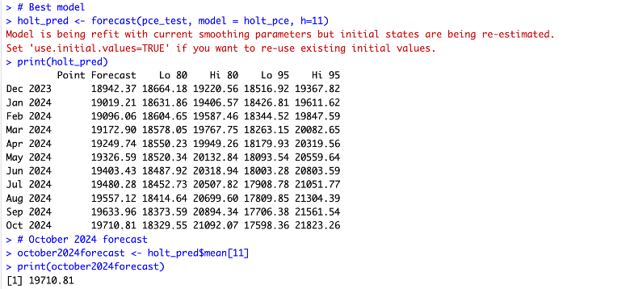
Figure 11: Forecast for forth-coming months.
One-step-ahead rolling forecast:
Since the initial values were re-estimated while applying the Holt’s model on the test set, one-step-ahead rolling forecast was done without re-estimating the parameters. This forecast predicts the value of the next period (h=1). Applying one-step-ahead, the value of October 2024 was found the same as predicted by the Holt’s model.
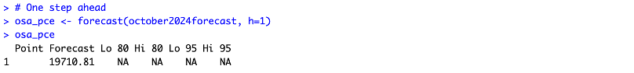
Figure 12: One-step-ahead rolling forecast.